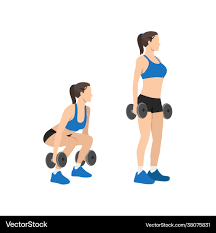

Cardio Workouts
Jumping Jacks

Jumping jacks are a great full-body exercise that helps improve cardiovascular fitness and endurance.
Movement Category: Cardio
Programming: 3-4 sets of 30 seconds
Watch Demonstration
High Knees
High knees are an effective cardio exercise that targets the legs and helps with overall body conditioning.
Movement Category: Cardio
Programming: 3-4 sets of 30 seconds
Watch Demonstration
Burpees
Burpees are a full-body exercise that combines strength and cardio for a high-intensity workout.
Movement Category: Cardio/Strength
Programming: 3-4 sets of 10-15 repetitions
Watch Demonstration
Strength Training
Squats

Squats are a fundamental lower body exercise that strengthens the quads, hamstrings, and glutes.
Movement Category: Strength
Programming: 3-4 sets of 10-12 repetitions
Watch Demonstration
Lunges
Lunges are a great exercise for targeting the lower body and improving balance and stability.
Movement Category: Strength
Programming: 3-4 sets of 10-12 repetitions per leg
Watch Demonstration
Push-Ups
Push-ups are a classic bodyweight exercise that targets the chest, triceps, and shoulders.
Movement Category: Strength
Programming: 3-4 sets of 10-15 repetitions
Watch Demonstration
Dumbbell Rows
Dumbbell rows are an effective back exercise that targets the lats and rhomboids.
Movement Category: Strength
Programming: 3-4 sets of 8-12 repetitions per arm
Watch Demonstration
Flexibility Workouts
Downward Dog

Downward dog is a yoga pose that stretches the hamstrings, calves, and shoulders while strengthening the core.
Movement Category: Flexibility
Programming: Hold for 30 seconds to 1 minute
Watch Demonstration
Child's Pose
Child's pose is a gentle yoga stretch that helps relax the back and hips, promoting flexibility and relaxation.
Movement Category: Flexibility
Programming: Hold for 30 seconds to 1 minute
Watch Demonstration
Cat-Cow Stretch
The Cat-Cow stretch is a dynamic movement that enhances spinal flexibility and helps alleviate back tension.
Movement Category: Flexibility
Programming: 3 sets of 10-15 repetitions
Watch Demonstration
Butterfly Stretch
The butterfly stretch targets the inner thighs and hips, improving flexibility and range of motion.
Movement Category: Flexibility
Programming: Hold for 30 seconds to 1 minute
Watch Demonstration
Hip Flexor Stretch
This stretch targets the hip flexors and can help improve overall hip mobility and reduce tightness.
Movement Category: Flexibility
Programming: Hold for 30 seconds to 1 minute per side
Watch Demonstration